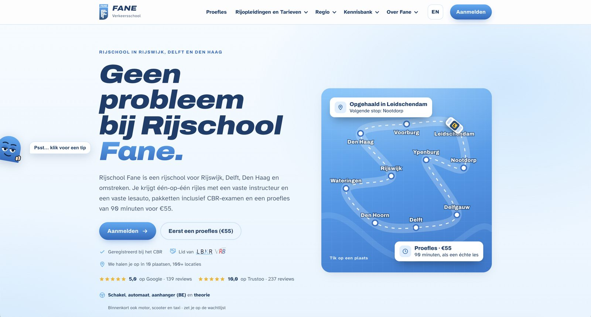
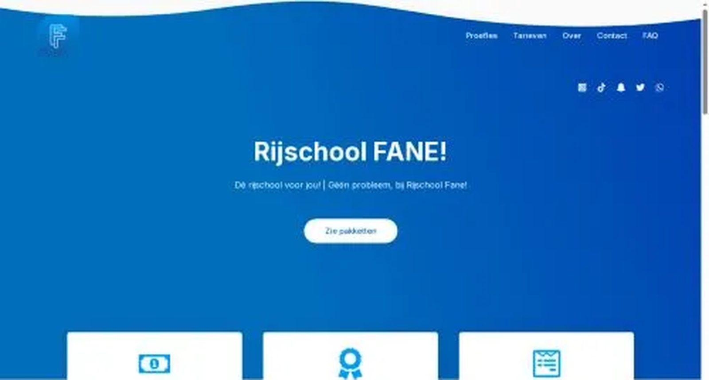

Website laten maken
Een website die gevonden wordt. Door Google én AI.
KIJK62 maakt professionele websites op maat: ontwerp, teksten, foto's uit onze eigen studio, SEO en GEO in één team. Elke website is anders, dus je krijgt geen standaardprijs maar een offerte op maat.
KIJK62 uit Poeldijk (Westland, bij Den Haag) maakt professionele websites op maat voor mkb-bedrijven. Inbegrepen: ontwerp, teksten, fotografie in de eigen studio, technische SEO en GEO (vindbaarheid in AI-zoekmachines zoals ChatGPT en Google AI). De prijs is maatwerk: na een gratis kennismaking volgt een offerte met een vaste prijs.
- Snel
- Mobiel
- SEO
- GEO
- Toegankelijk
Voor en na · fane.nl
Rijschool Fane: van standaard naar opvallend
KIJK62 bouwde de nieuwe website van Rijschool Fane in Rijswijk, Delft en Den Haag. Sleep de schuif en zie het verschil.


- Eigen ontwerp in plaats van een templateEen herkenbare huisstijl met het logo van Fane, in plaats van een standaardthema.
- Kop die zegt wat en waarBezoekers en Google zien meteen: rijschool in Rijswijk, Delft en Den Haag.
- Interactieve kaart van de ophaalplaatsenTik op een plaats en zie waar Fane je ophaalt.
- Vertrouwen en prijs bovenaanReviews, CBR-registratie en de proefles van € 55 direct in beeld.
- Gebouwd om gevonden te wordenTweetalig NL/EN, pagina's per regio en een kennisbank met antwoorden.
Wat je krijgt
Alles voor een website die werkt
Geen los ontwerp dat je zelf moet vullen. Bij KIJK62 krijg je een complete website, klaar om klanten binnen te halen.
Ontwerp op maat
Geen template, maar een ontwerp dat past bij je bedrijf en je huisstijl.
Teksten die verkopen
Geschreven door ons, in jouw toon, met de zoekwoorden waar klanten op zoeken.
Foto's uit eigen studio
Jouw team en producten, gefotografeerd in Poeldijk of op locatie.
SEO vanaf dag één
Snelheid, mobiel, titels, schema.org, sitemap en lokale SEO.
GEO voor AI-zoekmachines
Heldere antwoorden, gestructureerde data en llms.txt, zodat ChatGPT en Google AI je noemen.
Toegankelijk en veilig
Goed leesbaar, met toetsenbord te bedienen en met een beveiligde verbinding.
Website-bouwer
Stel je website samen
Kies wat voor website je nodig hebt en wat erin moet. Je ziet direct je bouwtekening en wat de prijs bepaalt. Je keuzes gaan mee naar je offerteaanvraag.
SEO + GEO
Gevonden in Google én in AI-antwoorden
Steeds meer mensen stellen hun vraag aan ChatGPT, Perplexity of de AI-antwoorden in Google. Die noemen alleen bedrijven die ze begrijpen en vertrouwen. Daarom bouwen we elke website voor beide.
Voor zoekmachines
- Snelle laadtijd en goed op mobiel
- Unieke titel en beschrijving per pagina
- Pagina's per dienst en per regio
- Sitemap, interne links en lokale SEO
Voor AI-zoekmachines
- Kort, feitelijk antwoord bovenaan elke pagina
- Gestructureerde data (schema.org)
- Veelgestelde vragen met heldere antwoorden
- Een llms.txt die AI vertelt wie je bent
Prijs
Waarom geen vaste prijs vooraf?
Omdat elke website anders is. Deze zes dingen bepalen de prijs. In de offerte zie je per onderdeel wat je krijgt, met een vaste totaalprijs.
Aantal pagina's
Een one-pager is iets anders dan twintig dienst- en regiopagina's.
Functies
Formulieren, een calculator, portfolio, kennisbank of afsprakensysteem.
Talen
Elke extra taal betekent vertaalde teksten en extra SEO-werk.
Teksten en beeld
Lever je zelf aan, of maken wij de teksten en foto's in onze studio?
Koppelingen
Bijvoorbeeld met je agenda, CRM of nieuwsbrief.
Onderhoud
Wil je na de livegang zelf aanpassen, of doen wij dat voor je?
Werkwijze
Van kennismaking tot livegang
- Jij + KIJK62
Kennismaking
Wat moet de website doen? Voor wie? We bekijken je huidige site en je concurrenten.
- KIJK62
Offerte met vaste prijs
Je krijgt een voorstel met pagina's, functies, planning en een vaste prijs.
- KIJK62
Structuur en zoekwoorden
We bepalen welke pagina's er komen en op welke zoekvragen elke pagina moet scoren.
- KIJK62
Ontwerp, teksten en foto's
Ontwerp op maat, teksten in jouw toon en een fotoshoot in onze studio.
- Jij
Feedback en akkoord
Je bekijkt de website online voordat hij live gaat en geeft je feedback.
- KIJK62
Livegang en meten
We zetten de site live, melden hem aan bij Google en meten wat er binnenkomt.
Voorbeeld
Ook deze website is van ons
Alles wat je hier ziet, maken we ook voor jou: tweetalig, een ROI-calculator, een portfolio, pagina's per dienst, kanaal en regio, en de technische basis voor SEO en GEO.
- Tweetalig NL/ENMet taalknop en hreflang voor Google.
- Interactieve toolsCalculator, planner en website-bouwer.
- Gestructureerde data op elke paginaBedrijf, diensten, vragen en kruimelpaden.
- Getest op elk schermformaatVan kleine telefoon tot groot scherm, licht en donker.
Vragen
Vragen over een website laten maken
Staat je vraag er niet bij? Bel of mail ons, dan leggen we het uit.
Wat kost een website laten maken bij KIJK62?
Elke website is maatwerk, dus we noemen vooraf geen standaardprijs. De prijs hangt af van het aantal pagina's, functies zoals formulieren, een calculator of meertaligheid, en of wij ook de teksten en foto's maken. Na een gratis kennismaking krijg je een offerte met een vaste prijs, zodat je vooraf precies weet waar je aan toe bent.
Hoe lang duurt het om een website te laten maken?
Dat hangt af van de omvang en van hoe snel teksten en beelden klaar zijn. In de offerte staat een planning met data, van ontwerp tot livegang.
Wat is GEO en waarom is het belangrijk voor mijn website?
GEO staat voor Generative Engine Optimization: je website zo inrichten dat AI-zoekmachines zoals ChatGPT, Perplexity, Gemini en de AI-antwoorden in Google je bedrijf begrijpen, vertrouwen en noemen. Wij doen dat met heldere, feitelijke antwoorden op elke pagina, gestructureerde data (schema.org), een llms.txt-bestand en een duidelijke opbouw per onderwerp.
Doen jullie ook SEO bij een nieuwe website?
Ja, technische SEO zit er standaard in: snelle laadtijd, goed op mobiel, unieke titels en beschrijvingen per pagina, schema.org, een sitemap, logische interne links en lokale SEO voor je regio. Zo staat de basis vanaf de eerste dag goed.
Maken jullie ook de teksten en foto's voor de website?
Ja. Dat is het verschil met de meeste webbureaus: we hebben een eigen fotostudio in Poeldijk en schrijven de teksten zelf, in de toon van je bedrijf. Je krijgt een complete website, niet alleen een ontwerp dat je zelf moet vullen.
Kunnen jullie mijn bestaande website vernieuwen?
Ja. We kijken eerst wat goed scoort in Google, zodat je bij de vernieuwing geen posities verliest. Oude adressen sturen we door naar de nieuwe pagina's.
Kan de website meertalig?
Ja. Net als deze website kunnen we je site in het Nederlands en Engels maken, met een taalknop op elke pagina en de juiste koppelingen voor Google.
Regelen jullie ook hosting, domein en onderhoud?
We adviseren je over domein en hosting en helpen bij het overzetten. Onderhoud en kleine aanpassingen na de livegang kunnen we in overleg voor je doen.
Klaar voor een website die werkt?
Plan een gratis kennismaking. We kijken naar je huidige site en je doelen, en je krijgt een offerte met een vaste prijs.